产品需求分析 ・ 需求规格说明
个人知识学习 AI 智能体 ―― 产品范围与需求基线
周宇航 | 2026-10-08 | V3.1
目录
本报告定义「认知副驾」的产品范围与需求基线：明确做什么（功能需求）、做到什么程度（非功能需求）、如何与外部交互（接口需求）、需要管理哪些数据（数据需求），并给出可验证的验收标准与需求追踪关系，作为后续设计、开发、测试与验收的共同依据。
|
版本 |
日期 |
修订人 |
修订说明 |
|
V1.0 |
2026-09 |
周宇航 |
首版需求分析，确立五层能力梯度（ L1�CL5 ）与目标用户画像 |
|
V2.0 |
2026-09 |
周宇航 |
三引擎混合架构简化为单一 LLM ；功能需求改写为分角色的用例（ Use Case ）形式 |
|
V3.0 |
2026-09 |
周宇航 |
模型供应商由 Anthropic Claude 切换为国产 DeepSeek （ deepseek-flash ），改为每请求 reasoning 开关切换思考模式 |
|
V3.1 |
2026-10-08 |
周宇航 |
补齐系统上下文、总体架构、业务流程、用例、数据实体关系等 14 张图 ；新增术语与缩略语表、数据字典、需求追踪矩阵、验收标准表；统一小节编号；修正模型层与接入方式的表述 |
在信息过载的时代，知识工作者普遍面临一个困境：收藏了大量文章、保存了海量笔记、划了无数重点，但真正需要调用时却找不到，更谈不上消化吸收。「收藏」这一行为带来的心理安全感，掩盖了知识并未真正转化为个人认知的事实。
以 Notion、Obsidian、Evernote 为代表的传统知识管理工具，本质上是「存储与检索」系统，存在三大固有缺陷：
1. 无法处理模糊输入――用户必须输入精准关键词才能命中结果，而人对内容的记忆往往是碎片化、感官化的；
2. 无法主动发起行动――系统只能被动响应查询，不能主动提醒、追问、纠偏；
3. 无法进行逻辑推理和因果推断――无法发现收藏内容之间的矛盾，更无法基于行为数据诊断学习问题。
「认知副驾」正是为解决上述问题而设计的 AI 智能体产品：通过持续对话与自主推理，帮助用户把「收藏的碎片」转化为「可调用的认知」，并持续修正学习方向。区别于传统工具的「被动存储」定位，认知副驾是一个主动型学习伙伴――它不仅回答问题，还主动发现矛盾、生成追问、监测行为偏离、诊断学习病根。
技术背景：产品全部智能能力基于单一外部大语言模型服务（DeepSeek，模型名 deepseek-flash）提供，通过统一网关接入，不与多厂商混合编排，以降低架构复杂度与不确定性；模型层通过抽象接口封装，保留未来替换或新增服务商的能力。
|
术语 / 缩略语 |
说明 |
|
LLM |
大语言模型（ Large Language Model ）；本产品单一依赖 DeepSeek |
|
智能体（ Agent ） |
具备感知、推理、规划与行动能力，可自主发起行为的系统；区别于纯问答式对话 |
|
L1�CL5 |
五级能力梯度： L1 认知挖掘、 L2 冲突检测、 L3 认知助产、 L4 路径自我修正、 L5 偏误诊断 |
|
Embedding |
文本向量表示，用于语义检索与相似度计算 |
|
Function Calling |
模型函数调用机制，用于驱动外部动作 |
|
RAG |
检索增强生成（ Retrieval-Augmented Generation ） |
|
Prompt 缓存 |
服务端提示缓存，命中可显著降低输入成本 |
|
误报抑制 |
低置信度过滤 + 用户忽略收敛的组合机制，用于降低打扰 |
|
UC |
Use Case ，用例 |
|
AT |
Acceptance Test ，验收测试项 |
|
MVP |
最小可行产品（ Minimum Viable Product ） |
|
认知闭环 |
诊断 → 计划 → 监测 → 干预 → 再诊断的自进化链路 |
项目总体目标为：构建一个基于大语言模型的个人知识学习智能体，实现从「知识存储」到「认知转化」的跃迁。具体分解为五项可衡量的子目标：
|
编号 |
目标 |
衡量指标 |
|
G1 |
将「收藏的碎片」转化为「可调用的认知」 |
模糊检索一次命中率、多轮追问收敛轮数 |
|
G2 |
主动发现知识矛盾并提醒 |
冲突检测覆盖新增内容比例、误报率 |
|
G3 |
引导用户问「该问没问」的问题 |
认知简报每周推送的追问数 |
|
G4 |
计划偏离时自主纠偏 |
行为偏离 → 干预 → 路径调整的平均时延 |
|
G5 |
定位学习病根并给出方案 |
月度健康报告覆盖用户比例、诊断采纳率 |
|
角色 |
角色编号 |
说明 |
|
学习者 |
U1 |
主要交互对象，有收藏 / 笔记习惯的知识工作者或学生 |
|
知识源 |
S1 |
外部系统：本地书籍文件、微信读书等阅读平台 |
|
认知副驾系统 |
SYS |
自身作为执行者，自主感知、推理、推送 |
|
特征维度 |
描述 |
|
痛点 |
收藏即遗忘、检索靠精确关键词、学习无体系 |
|
诉求 |
主动挖掘、发现矛盾、被提醒、被纠偏、被诊断 |
|
使用频率 |
每日碎片化使用 + 每周 / 每月被动接收简报 |
|
技术能力 |
无需技术背景，纯自然语言交互 |
|
痛点 |
具体表现 |
根因分析 |
产品对应能力 |
|
收藏即遗忘 |
收藏夹与笔记库持续膨胀，调用率极低，「存了 = 学了」的错觉 |
存储行为与认知加工脱节，缺乏后续激活机制 |
L1 认知挖掘：模糊意图定位，多轮追问找回内容 |
|
检索依赖精确关键词 |
只记得「橙色封面、讲拖延症」之类的碎片线索，无法检索 |
传统工具基于关键词匹配，不支持语义与模糊输入 |
L1 ：语义向量检索 + LLM 多轮澄清 |
|
知识矛盾无察觉 |
先后收藏的观点相互冲突而不自知，认知持续被污染 |
工具不做内容间关系分析 |
L2 冲突检测：主动扫描 + 实时检测 + 误报抑制 |
|
学习无体系、不知问什么 |
大量收藏某类主题却完全忽略关键盲区 |
缺乏对知识结构的全局审视 |
L3 认知助产：周认知简报 + 深度追问 |
|
计划执行偏离无纠偏 |
立了学习目标，连续多日未执行也无人提醒 |
计划工具不做行为监测与干预 |
L4 路径自我修正：偏离监测 + 干预对话 + 重规划 |
|
学习问题难归因 |
「总学不好、总拖延」，找不到病根 |
缺乏基于行为数据的链式归因分析 |
L5 偏误诊断：月度健康报告 + 主动归因诊断 |
认知副驾是基于大语言模型的个人知识学习智能体，以「主动认知伙伴」而非「被动存储工具」为定位，通过五级递进的智能体主动性（L1→L5）覆盖从「帮用户找回知识」到「帮用户认识自己」的完整价值链。
系统与外部实体的交互关系如下图，它是本报告全部需求的边界依据：方框内为系统职责，方框外为外部交互方。 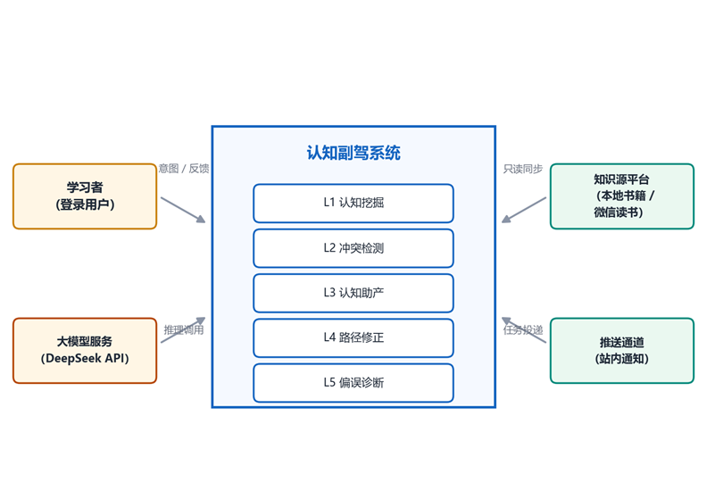
|
维度 |
传统工具 |
认知副驾 |
|
交互模式 |
关键词检索，被动响应 |
自然语言对话，支持模糊输入与多轮澄清 |
|
主动性 |
零主动，等用户发起 |
主动扫描冲突、主动推送简报、主动干预偏离 |
|
推理能力 |
无 |
语义比对、逻辑分析、因果推断、链式归因 |
|
知识关系 |
孤立条目 |
识别矛盾 / 互补 / 断层关系，含置信度评估 |
|
学习闭环 |
无计划、无监测 |
目标 → 计划 → 监测 → 干预 → 诊断全闭环 |
1. 单一模型依赖：全部智能能力收敛到 DeepSeek API 统一网关，业务层不感知实现细节；通过抽象接口封装保留未来替换 / 新增服务商的能力。
2. 运行环境：服务端部署，Python / FastAPI 异步服务；模型层需联网访问 DeepSeek API。
3. 用户端：Web 对话工作台为主，功能页为辅；移动端以响应式 Web + PWA 接入。
4.
分层结构：用户交互层 / 应用服务层 / 领域能力层 / 数据与模型层四层，模型调用是唯一收口点。 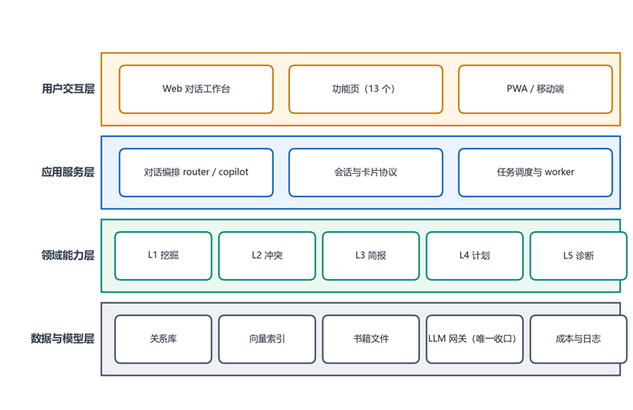
知识接入
→ 认知加工（向量化 + 主张提取）→ 主动服务（挖掘 / 冲突 / 简报 / 干预 / 诊断）→ 用户反馈 → 闭环修正（计划重规划 / 推荐收敛）。 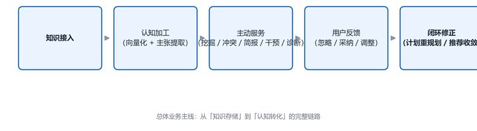
学习者授权接入知识源（本地书籍文件、微信读书等）→ 系统建立连接并同步原文 → 系统对新条目做向量化与核心主张提取（超大条目分块处理）→ 回传同步结果。连接失败可重试，不阻塞已有数据。 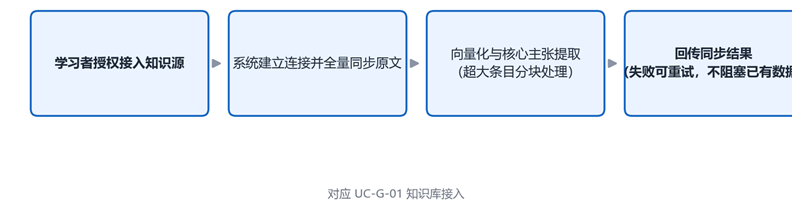
学习者输入碎片化线索（如「橙色封面，好像是讲拖延症的」）→ 系统解析产生多个候选匹配假设 → 候选不唯一时发起多轮追问 → 学习者回答缩小范围 → 循环直至定位 → 返回精准内容并附阅读历史提醒。假设唯一时直接交付；学习者无法回答时按最近相似度兜底返回。 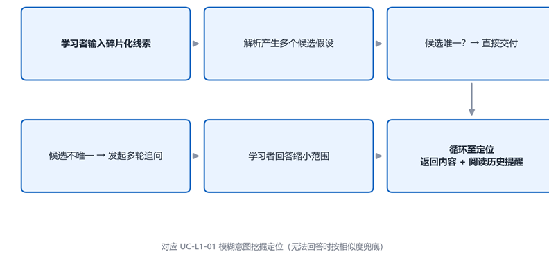
两条触发路径：①每周定时主动扫描新增条目；②新文章收藏时实时检测。处理流程：提取核心主张 → 语义比对与逻辑分析 → 识别矛盾
/ 互补 / 断层关系并过滤误报（低置信度不入库不推送）→ 形成冲突候选并推送提醒 → 学习者反馈「忽略 / 采纳」→ 反馈用于收敛与信任度量（同类型忽略 ≥3 次自动收敛）。 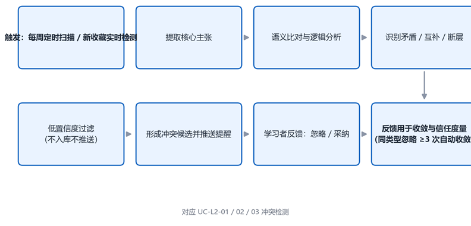
冲突记录的用户状态在三个取值间迁移，收敛与重新激活规则如下图： 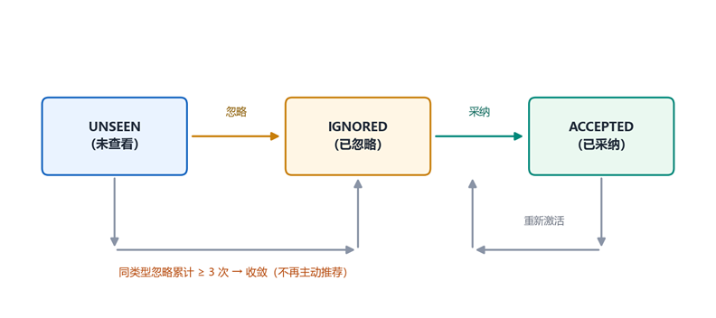
1. 周认知简报：每周定时分析知识库主题分布与认知深度 → 识别「大量存在 / 完全缺失」模式 → 生成 2�C3 个启发式深度追问 → 汇总本周冲突 → 推送简报。
2.
深度追问：学习者完成问答或收藏新内容后，基于缺失项生成 1 个衔接当前话题的深度问题，附数据依据推送，可承接新一轮对话。 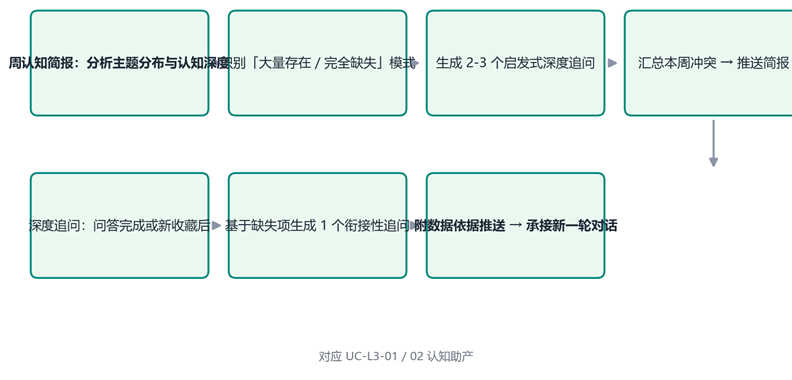
学习者设定学习目标（含期限与优先级）→ 系统拆解为周维度任务计划 → 回传确认 / 修改 → 计划生效进入行为监测。当连续 N 天（默认 3）未执行计划、行为模式显著变化或学习者主动请求时：系统聚合学习行为 → 分析偏离原因 → 生成路径调整建议
→ 发起干预对话 → 学习者同意则重拆计划并确认新路径（含预期收益），拒绝则保持原计划并记录偏好。 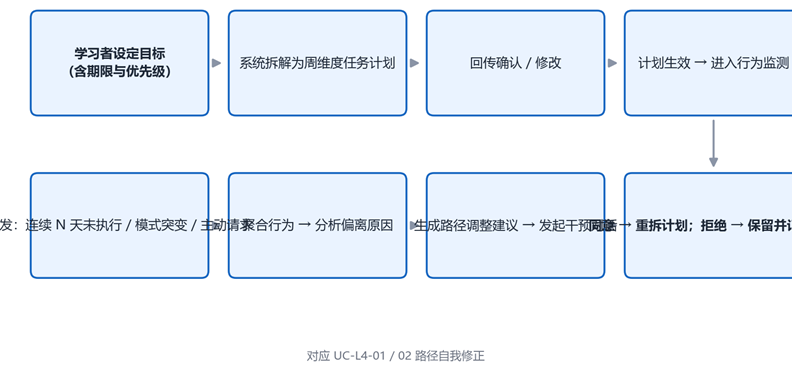
1. 月学习健康报告：每月定时批量分析行为数据 → 多因素归因 → 形成诊断报告（含置信度与推理链）→ 推送并询问是否采纳 → 采纳后解决方案拆为任务写入计划，与 L4 形成闭环。
2.
主动归因诊断：学习者主动询问「我为什么学不好 / 总拖延」→ 系统基于行为数据链式归因 → 返回诊断 + 可执行方案 → 可选写入计划。 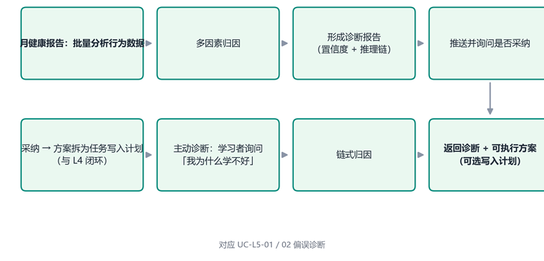
诊断（L5）→ 方案写入计划（L4）→ 行为监测 → 偏离干预 → 新行为数据 → 再诊断，形成「越用越懂用户」的自进化学习闭环。 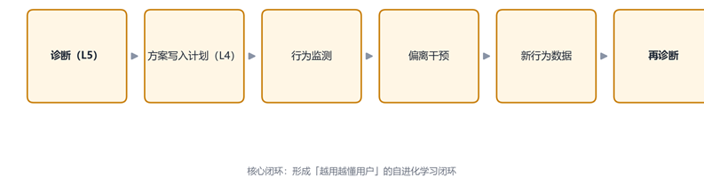
功能按参与角色组织为用例（Use Case），包含两大支撑能力（知识接入、推送与计划管理）与五级核心脑力能力（按智能体主动性从低到高 L1→L5）：
・ L1 认知挖掘――被动响应的模糊检索定位；
・ L2 冲突检测――系统主动扫描与实时检测知识矛盾；
・ L3 认知助产――系统主动生成追问与简报，引导思考；
・ L4 路径自我修正――监测行为偏离并主动干预重规划；
・
L5 偏误诊断――归因诊断学习病根并给出方案。 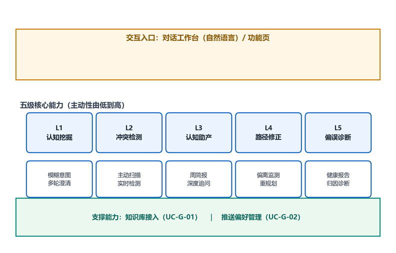
|
用例编号 |
用例名 |
主角色 |
能力 |
优先级 |
|
UC-G-01 |
知识库接入 |
学习者 / 系统 |
支撑 ― 知识接入 |
高 |
|
UC-G-02 |
主动推送偏好管理 |
学习者 |
支撑 ― 推送管理 |
中 |
|
UC-L1-01 |
模糊意图挖掘定位 |
学习者 |
L1 认知挖掘 |
高 |
|
UC-L2-01 |
知识冲突主动扫描 |
系统 |
L2 冲突检测 |
高 |
|
UC-L2-02 |
新内容实时冲突检测 |
系统 |
L2 冲突检测 |
中 |
|
UC-L2-03 |
冲突反馈（忽略 / 采纳） |
学习者 |
L2 冲突检测 |
中 |
|
UC-L3-01 |
周认知简报生成 |
系统 |
L3 认知助产 |
中 |
|
UC-L3-02 |
深度追问生成 |
系统 |
L3 认知助产 |
中 |
|
UC-L4-01 |
学习计划制定与重规划 |
学习者 / 系统 |
L4 路径自我修正 |
高 |
|
UC-L4-02 |
行为偏离监测与干预 |
系统 |
L4 路径自我修正 |
中 |
|
UC-L5-01 |
月学习健康报告 |
系统 |
L5 偏误诊断 |
中 |
|
UC-L5-02 |
学习归因诊断 |
学习者 / 系统 |
L5 偏误诊断 |
中 |
用例与参与者的整体关系如下图： 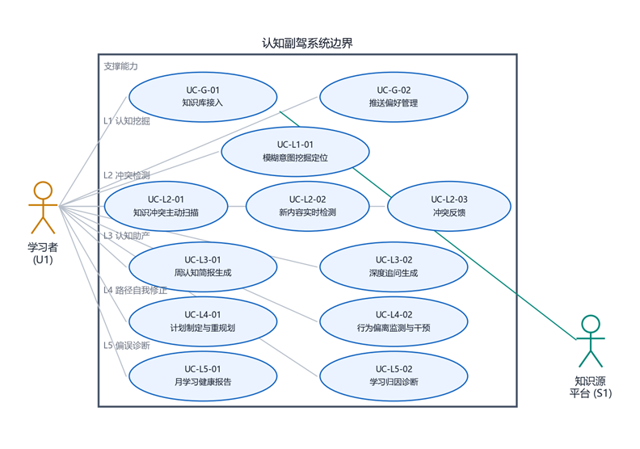
|
用例 |
触发条件 |
核心流程要点 |
关键扩展 / 异常 |
|
知识库接入 |
用户授权 |
授权 → 同步原文 → 向量化与主张提取 → 回传结果 |
超大条目分块；连接失败可重试不阻塞 |
|
推送偏好管理 |
用户设置 |
选择频率 → 保存 → 按偏好调度推送 |
同类型忽略 ≥3 次 → 自动收敛 |
|
模糊意图定位 |
模糊 / 感官化输入 |
线索 → 候选假设 → 多轮追问 → 定位交付 + 阅读历史提醒 |
唯一命中直接交付；无法回答按相似度兜底 |
|
冲突主动扫描 |
每周定时 |
扫描 → 主张提取 → 语义比对 → 过滤误报 → 候选（含置信度） → 推送 |
低置信度不入库不推送 |
|
实时冲突检测 |
收藏新文章 |
入库即检测 → 实时推送提醒 |
同扫描流程 |
|
冲突反馈 |
存在冲突提醒 |
查看 → 忽略 / 采纳 → 记录反馈 |
同类型忽略 ≥3 次收敛 |
|
周认知简报 |
每周定时 |
主题分布分析 → 缺失模式识别 → 生成 2�C3 个追问 → 汇总冲突 → 推送 |
― |
|
深度追问 |
问答完成 / 新收藏后 |
获取上下文 → 生成 1 个衔接性深度问题 → 附数据依据推送 |
可承接新对话 |
|
计划制定与重规划 |
用户设定目标 |
目标 → 周维度拆解 → 确认 → 写入 → 进入监测 |
调整时进入重规划流程 |
|
偏离监测与干预 |
连续 3 天未执行 / 模式突变 / 主动请求 |
聚合行为 → 归因 → 调整建议 → 干预对话 → 同意重拆 / 拒绝保留 |
拒绝时记录偏好 |
|
月健康报告 |
每月定时 |
批量分析 → 多因素归因 → 诊断报告（置信度 + 推理链） → 推送 → 询问采纳 |
采纳后写入计划闭环 |
|
归因诊断 |
用户主动询问 |
提问 → 链式归因 → 诊断 + 可执行方案 → 可写入计划 |
― |
|
能力 |
接口需求 |
|
对话 |
支持多轮自然语言交互，可跟随 Tool 调用完成动作 |
|
知识管理 |
新增 / 查询 / 导入知识条目 |
|
目标与计划 |
设定目标、查看 / 调整计划 |
|
冲突管理 |
查看冲突列表、反馈忽略 / 采纳 |
|
诊断与报告 |
查询最新诊断、健康报告 |
|
偏好设置 |
更新推送频率与其他偏好 |
|
成本查询 |
查询模型费用明细 |
每一条需求都必须能回溯到用例与验收项，无依据的功能不得进入范围（反向检查）：
|
需求 / 目标 |
承载用例 |
关键规则 |
验收项 |
|
G1 碎片变认知 |
UC-L1-01 |
多轮追问收敛轮数 ≤ 3 |
AT-01 |
|
G2 矛盾主动提醒 |
UC-L2-01 / 02 / 03 |
置信度 < 0.5 丢弃；同类型忽略 ≥3 次收敛 |
AT-02 、 AT-03 |
|
G3 引导提问 |
UC-L3-01 / 02 |
每周推送 2�C3 个追问，附数据依据 |
AT-04 |
|
G4 自主纠偏 |
UC-L4-01 / 02 |
连续 3 天未执行触发干预；拒绝则记录偏好 |
AT-05 |
|
G5 病根诊断 |
UC-L5-01 / 02 |
诊断须含归因链与置信度 |
AT-06 |
|
权限与数据隔离 |
全部业务用例 |
仅可操作本人资源，越权拒绝且数据不变 |
AT-07 |
|
降级可用性 |
全部能力 |
向量库不可用时回退关键词检索 |
AT-08 |
|
打扰控制 |
UC-G-02 、 UC-L2-03 |
频率偏好 + 免打扰 + 自动收敛 |
AT-03 |
|
实体 |
用途 |
关键属性 |
|
User （用户） |
账号、偏好 |
昵称、推送频率、加密 key |
|
KnowledgeItem （知识条目） |
知识库基本单位 |
标题、正文、来源、标签、阅读进度、核心主张 |
|
Claim （核心主张） |
冲突比对的最小单位 |
主张文本、所属条目、向量 |
|
LearningGoal （学习目标） |
目标管理 |
描述、期限、优先级、是否达成 |
|
LearningPlan （学习计划） |
计划管理 |
目标关联、结构化计划内容 |
|
PlanTask （计划任务） |
任务拆解 |
周次、主题、状态、关联条目 |
|
CognitiveDiagnosis （诊断报告） |
偏误诊断输出 |
行为模式、归因、置信度、推理链、状态 |
|
Conflict （观点冲突） |
冲突检测产物 |
条目 A/B 、冲突类型、细节、建议、用户状态 |
|
Conversation （会话） |
对话状态 |
状态机状态、上下文 |
|
PushLog （推送日志） |
推送追溯与去重 |
类型、内容 hash 、渠道、用户反馈 |
实体之间的关系如下图：用户拥有知识条目与学习目标；知识条目分解为核心主张；主张之间比对产生观点冲突；诊断结论可写入计划任务，构成闭环。 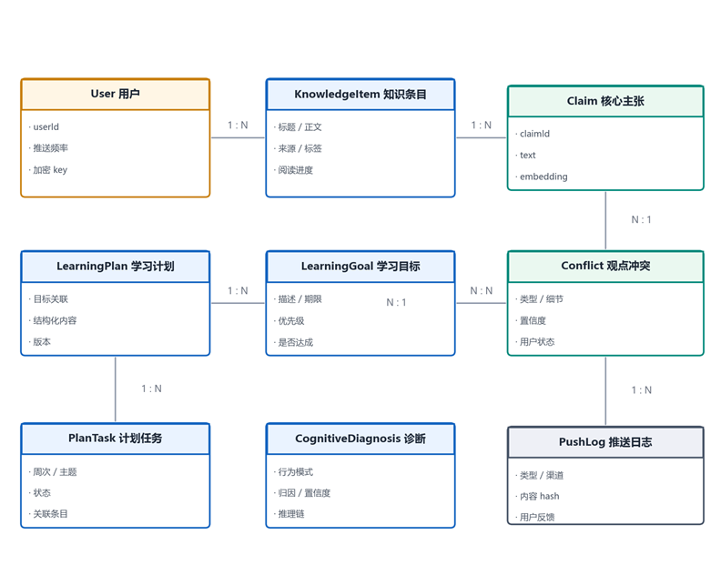
|
实体 |
字段 |
类型 |
说明 |
|
User |
user_id / display_name |
string |
用户标识与昵称 |
|
User |
push_frequency |
enum |
weekly / daily / quiet |
|
KnowledgeItem |
item_id / title / content |
string / text |
主键、标题与正文 |
|
KnowledgeItem |
source |
enum |
来源：手动录入 / 书籍摘录 / 微信读书 |
|
KnowledgeItem |
read_progress |
float |
阅读进度 0�C1 |
|
KnowledgeItem |
is_deleted / deleted_at |
bool / datetime |
软删除标记，不物理删除 |
|
Claim |
claim_id / text |
string |
主张标识与文本 |
|
Claim |
item_id |
string |
所属知识条目（外键） |
|
Conflict |
conflict_id |
string |
主键 |
|
Conflict |
claim_a_id / claim_b_id |
string |
冲突双方主张（外键） |
|
Conflict |
conflict_type |
enum |
矛盾 / 互补 / 断层 |
|
Conflict |
confidence |
float |
置信度 0�C1 ； < 0.5 丢弃 |
|
Conflict |
user_state |
enum |
unseen / ignored / accepted |
|
Conflict |
ignore_count |
int |
同类型忽略计数， ≥3 触发收敛 |
|
LearningGoal |
goal_id / description |
string |
目标标识与描述 |
|
LearningGoal |
target_date / priority |
date / int |
期限与优先级 |
|
LearningPlan |
plan_id / goal_id |
string |
计划标识与所属目标 |
|
PlanTask |
task_id / week / topic / status |
string / int |
任务拆解与状态 |
|
CognitiveDiagnosis |
pattern / root_cause |
string |
行为模式与归因结论 |
|
CognitiveDiagnosis |
confidence / reasoning_chain |
float / list |
置信度与推理链 |
|
PushLog |
push_type / content_hash / channel |
string |
推送类型、去重哈希与渠道 |
|
Conversation |
conversation_id / state |
string |
会话标识与状态机状态 |
|
存储 |
承载数据 |
说明 |
|
关系库 |
用户 / 目标 / 计划 / 诊断 / 冲突 / 推送日志 |
事务强一致 |
|
向量索引 |
知识条目与主张的 Embedding |
语义检索 |
|
缓存 |
会话状态 / 限流 / 短期记忆 |
低延迟 |
|
对象存储 |
原文附件 / 长文快照 |
大文件 |
1. 敏感分级：用户知识内容属敏感个人数据，加密存储、最小化收集；
2. 软删除：全表软删（is_deleted + deleted_at），避免误删不可恢复；
3. 生命周期：归档（不参与检索、可恢复）→ 保留期到期后物理清除（合规可擦除）；
4. 追溯：推送与模型调用留痕，支持审计与成本归因。
|
编号 |
指标 |
目标 |
|
性能 -1 |
对话首字响应 |
≤ 3s （普通任务）；深度推理显示「思考中」占位 |
|
性能 -2 |
语义检索 P95 |
≤ 500ms |
|
性能 -3 |
批量扫描吞吐 |
异步执行，不阻塞在线请求 |
|
性能 -4 |
周 / 月简报生成 |
后台任务完成，用户无感知等待 |
|
编号 |
指标 |
目标 |
|
易用 -1 |
交互方式 |
纯自然语言对话，零学习成本 |
|
易用 -2 |
知识接入 |
用户一次授权即可，无需额外操作 |
|
易用 -3 |
打扰控制 |
推送可设频率与免打扰，避免过度打扰 |
|
编号 |
指标 |
目标 |
|
可靠 -1 |
模型服务容错 |
DeepSeek API 异常自动重试（重试 2 次），不因单次失败中断 |
|
可靠 -2 |
状态一致性 |
关键写操作走事务，计划 / 诊断采用乐观锁防覆盖 |
|
可靠 -3 |
任务可靠性 |
定时任务具备失败重试与死信告警；支持断点续跑 |
|
可靠 -4 |
依赖降级 |
向量库不可用时回退关键词检索，功能降级不中断 |
|
编号 |
指标 |
目标 |
|
安全 -1 |
传输 |
全链路 TLS 加密 |
|
安全 -2 |
存储 |
用户知识内容加密落库，最小化日志 |
|
安全 -3 |
隔离 |
账号 key / 额度隔离，防越权 |
|
安全 -4 |
数据使用 |
不做超越授权范围的数据使用；删除支持软删 + 合规可擦除 |
|
安全 -5 |
输出校验 |
模型输出经敏感词 / 内容校验过滤 |
|
编号 |
指标 |
目标 |
|
扩展 -1 |
知识库源扩展 |
连接器插件化，新增来源不影响核心流程 |
|
扩展 -2 |
能力扩展 |
五大能力独立模块，可单独增删 / 灰度 |
|
维护 -1 |
可观测性 |
统一 request_id 全链路日志，成本与调用埋点齐全 |
|
维护 -2 |
可配置性 |
规则 / 提示词 / 推送策略配置化热更新 |
1. 模型能力成熟：单一依赖的 DeepSeek API 需支持工具调用、思考模式、长上下文与 Prompt 缓存，均为当前主流大模型已具备的成熟能力；统一网关封装了重试、限流、熔断与成本埋点，单点依赖风险已有工程手段缓冲，且抽象接口保留了未来替换 / 新增服务商的能力。
2. 技术栈成熟：Python / FastAPI 异步服务、关系型数据库、向量检索、缓存与对象存储均为业界广泛验证的组件，语义检索、RAG 式召回为成熟工程范式。
3. 架构降级保障：向量检索不可用可回退关键词检索，功能降级不中断，保证核心可用性。
1. 成本可控机制内置：Prompt 缓存降低输入成本；成本与调用埋点齐全；用户侧提供成本查询接口，模型费用透明可核算；
2. 异步化摊薄峰值：批量扫描与周 / 月简报均为后台异步任务，避开在线高峰，降低算力峰值成本；
3. 单模型架构降低运维成本：相比多厂商混合编排，单一 LLM 依赖显著降低网关复杂度、联调与维护成本。
1. 纯自然语言交互、零学习成本，目标用户无需技术背景；
2. 知识接入一次授权即可，无额外操作负担；
3. 推送频率可设并有免打扰与自动收敛机制，打扰风险可控。
1. 全链路 TLS 传输加密 + 落库加密，满足数据安全基线；
2. 数据使用不超越授权范围，软删 + 合规可擦除满足用户数据删除权；
3. 账号隔离与最小化日志降低数据泄露与滥用风险；模型输出经敏感词 / 内容校验过滤，降低生成内容风险。
|
风险 |
应对措施 |
|
模型 API 单点故障 / 限流 |
自动重试 2 次、限流熔断、统一网关隔离；抽象接口保留替换服务商能力 |
|
冲突检测误报导致用户流失 |
置信度阈值过滤 + 用户忽略 ≥3 次自动收敛的误报抑制机制 |
|
主动推送过度打扰 |
频率偏好 + 免打扰 + 推送日志去重 + 自动收敛 |
|
知识内容敏感泄露 |
加密存储、最小化收集、账号隔离、输出校验、审计留痕 |
以「验证核心价值闭环」为原则，优先交付高优先级用例与核心闭环链路，砍掉编辑器、协作与社交化等非核心能力。
|
层级 |
功能 |
优先级 |
说明 |
|
支撑能力 |
知识库接入（ UC-G-01 ） |
高 |
一切功能的前提，首期支持本地书籍与微信读书同步 |
|
支撑能力 |
推送偏好管理（ UC-G-02 ） |
中 |
频率设置与打扰控制 |
|
L1 |
模糊意图挖掘定位（ UC-L1-01 ） |
高 |
核心差异化能力，直接命中「收藏即遗忘」痛点 |
|
L2 |
知识冲突主动扫描（ UC-L2-01 ） |
高 |
每周定时全量扫描 |
|
L2 |
实时冲突检测（ UC-L2-02 ） |
中 |
新收藏即检测 |
|
L2 |
冲突反馈（ UC-L2-03 ） |
中 |
忽略 / 采纳与自动收敛 |
|
L3 |
周认知简报（ UC-L3-01 ） |
中 |
每周推送追问与冲突汇总 |
|
L3 |
深度追问（ UC-L3-02 ） |
中 |
问答 / 收藏后衔接式追问 |
|
L4 |
计划制定与重规划（ UC-L4-01 ） |
高 |
目标拆解为周维度任务 |
|
L4 |
偏离监测与干预（ UC-L4-02 ） |
中 |
连续 3 天未执行触发干预 |
|
L5 |
月学习健康报告（ UC-L5-01 ） |
中 |
月度诊断与方案落地 |
|
L5 |
归因诊断（ UC-L5-02 ） |
中 |
用户主动询问式诊断 |
1. Web 编辑器；
2. 多人协作；
3. 内容创作社交化。
1. 用户端：Web 对话工作台 + 功能页（桌面端、原生 App 为后续扩展）；
2. 模型层：单一 DeepSeek API 统一网关接入；
3. 接口范围：对话、知识管理、目标与计划、冲突管理、诊断与报告、偏好设置、成本查询七类用户侧接口框架。
1. 从「存了」到「会用」：模糊线索即可找回内容，收藏真正转化为可调用的认知资产；
2. 从「不知道」到「被提醒」：知识矛盾主动暴露，认知污染得以及时纠正；
3. 从「被动接收」到「主动思考」：系统持续追问「该问没问」的问题，弥补认知盲区；
4. 从「立目标」到「能达成」：计划偏离被主动干预，学习路径持续自我修正；
5. 从「迷茫」到「有数」：学习问题获得基于行为数据的归因诊断与可执行方案。
|
对应目标 |
核心指标 |
|
G1 碎片变认知 |
模糊检索一次命中率 ↑ 、多轮追问收敛轮数 ↓ |
|
G2 矛盾主动提醒 |
冲突检测覆盖新增内容比例 ↑ 、误报率 ↓ |
|
G3 引导提问 |
认知简报每周推送的追问数（含用户参与率） |
|
G4 自主纠偏 |
行为偏离 → 干预 → 路径调整的平均时延 ↓ |
|
G5 病根诊断 |
月度健康报告覆盖用户比例 ↑ 、诊断采纳率 ↑ |
1. 形成「接入→挖掘→冲突→追问→纠偏→诊断」的差异化智能体能力壁垒，与传统知识管理工具形成清晰定位区隔；
2. 通过五级能力独立模块化与灰度机制，支持按数据反馈逐级放量，快速迭代；
3. 闭环数据（反馈、信任度量、行为数据）持续积累，形成「越用越懂用户」的产品护城河，为后续模型服务商扩展与能力升级奠定基础。
验收项与需求追踪矩阵一一对应，用于测试用例设计与验收判定：
|
编号 |
测试条件 |
预期结果 |
依据 |
|
AT-01 |
输入模糊线索「橙色封面、好像是讲拖延症的」 |
系统发起追问或直接定位，收敛轮数 ≤ 3 ，返回内容附阅读历史 |
G1 / UC-L1-01 |
|
AT-02 |
冲突置信度分别为 0.49 与 0.50 |
0.49 不入库不推送； 0.50 入库且可查询 |
G2 / 冲突过滤规则 |
|
AT-03 |
同一类型冲突累计第 3 次「忽略」 |
该类型不再出现在主动推荐中 |
G2 / 收敛规则 |
|
AT-04 |
知识库连续两周无新增内容 |
周简报仍按时生成，明确提示「本周无新增」而非静默失败 |
G3 / UC-L3-01 |
|
AT-05 |
学习计划连续 3 天未执行 |
触发干预对话，给出含预期收益的调整建议 |
G4 / UC-L4-02 |
|
AT-06 |
收藏 20 篇、完整读完 2 篇 |
诊断报告给出归因链（非仅完成率）与可执行方案 |
G5 / UC-L5-01 |
|
AT-07 |
用户乙请求修改用户甲的资源 |
拒绝（ 404 / 403 ）；甲的数据与状态保持不变 |
权限与数据隔离规则 |
|
AT-08 |
向量检索服务不可用 |
自动回退关键词检索，主链路不中断，并标注降级状态 |
可靠性要求 |
1. 《认知副驾》产品定位与五层能力梯度说明（项目内部文档）；
2. GB/T 8567―2006《计算机软件文档编制规范》――软件需求规格说明章节结构参考；
3. IEEE Std 830―1998《Recommended Practice for Software Requirements Specifications》――需求可验证性与追踪关系参考；
4. DeepSeek 开放平台 API 文档――模型接入与计费口径依据。